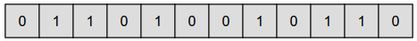
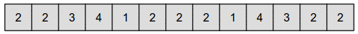
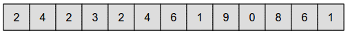

Muodosta numerojono, jonka tuloksena syntyy haluttu kuva.
Klikkaa numeronappeja lisätäksesi numeroita jonoon ja ymmärtääksesi, kuinka numeroiden lisääminen vaikuttaa kuvaan.
Vihje: tehtävän voi ratkaista käyttämättä nollaa.
Vihje: ruudun väriin vaikuttaa myös sen yläpuolella olevan ruudun väri.
Kokeilemalla voimme huomata, että 0 vastaa valkoista ruutua ja 1 mustaa ruutua, ja että numerot vastaavat ruutuja riveittäin etenevässä järjestyksessä. Tämän jälkeen ratkaisu saadaan määritettyä varsin suoraviivaisesti.

Kokeilemalla voimme huomata, että joka toinen numero vastaa peräkkäisten valkoisten ruutujen jaksoa ja joka toinen mustien peräkkäisten ruutujen jaksoa niin, että numero kertoo jaksoon sisältyvien ruutujen määrän.
Voimme siis muodostaa ratkaisun kirjaamalla numeroriville halutussa kuvassa vuorottelevien valkoisten ja mustien jaksojen pituudet. Alussa on 2 valkoista, sitten on 2 mustaa, sitten on 3 valkoista (joista kolmas on toisen rivin alussa), sitten 4 mustaa, sitten 1 valkoinen, jne. Koko ratkaisu on esitetty alla:

Kokeilemalla voimme huomata, että joka toinen (jo valmiiksi annettujen kolmen numeron jälkeinen) numero vastaa sellaisten peräkkäisten ruutujen jaksoa, jossa ruudun väri on eri kuin sitä ylemmän ruudun väri, ja joka toinen numero sellaisten ruutujen jaksoa, jossa ruudun väri on sama kuin sitä ylemmän ruudun väri. Numero kertoo jaksoon sisältyvien ruutujen määrän.
Voimme siis muodostaa ratkaisun lisäämällä numeroriville halutussa kuvassa vuorottelevien ylänaapuriruutunsa kanssa eriväristen sekä samanväristen jaksojen pituudet. Tarkastelu aloitetaan halutun kuvan toisen rivin alusta, koska valmiiksi annetut kolme numeroa täyttivät täsmälleen ruudukon ensimmäisen rivin 8 ruutua. Halutun kuvan toisen rivin alussa on 3 ruutua, jotka eroavat ylänaapureistaan (ensimmäisellä rivillä samassa kohdissa olevista ruuduista). Sen jälkeen on 2 ylänaapurinsa kanssa samanväristä, jonka jälkeen on 4 ylänaapurinsa kanssa eriväristä. Näistä viimeksimainituista 4 erivärisestä viimeinen oli yhtäkuin kolmannen rivin ensimmäinen ruutu. Sen jälkeen on 6 ylänaapurinsa kanssa samanväristä ruutua. Kun jatkamme tällaisten jaksojen määritystä halutun kuvan loppuun asti, päädymme alla esitettyyn kokonaiseen ratkaisuun:

Kahden tähden versio havainnollistaa tietojenkäsittelyssä yleisesti mustavalkokuvien esittämiseen käytettyä esitystapaa (koodausta), jossa arvo 0 vastaa valkoista ja arvo 1 mustaa kuvapistettä. Kuvapistettä kutsutaan usein pikseliksi
Kolmen tähden versio havainnollistaa tietojenkäsittelyssä laajasti käytettyä kuvanpakkausta. Kuvanpakkauksen tavoitteena on esittää kuvan sisältö tarvitsematta tallentaa jokaisen pikselin arvoa (väriä) erikseen. Tehtävässä esitetty yksinkertainen tapa, jossa talletetaan yksittäisten pikselien sijaan samanvärisistä peräkkäisistä pikseleistä koostuvien jaksojen pituuksia, kykenee säästämään paljon tilaa, jos kuvassa on isoja samanvärisiä alueita (ja siten pitkiä samanväristen pikseleiden jaksoja). Esimerkiksi mustavalkoisia pikseleitä vastaava osuus "00000000000011111111" voidaan esittää selvästi lyhyemmin muodossa "12,8", joka tarkoittaa 12 kertaa 0 ja 8 kertaa 1 (eli 12 kertaa valkoinen pikseli ja 8 kertaa musta pikseli).
Edellä kuvattu pakkausmenetelmä tunnetaan yleisemmin nimellä RLE-koodaus (Run-Length Encoding).
Neljän tähden versio sivuaa monimutkaisempia kuvanpakkausmenetelmiä, joissa hyödynnetään tietoa pikselin naapureista. Esimerkiksi PNG-kuvaformaatti, jota käytetään melko yleisesti internet-sivuilla, käyttää mm. tämäntapaista menetelmää.
Katso lisää esim. https://fi.wikipedia.org/wiki/Pikseli, https://en.wikipedia.org/wiki/Binary_image (englanniksi), https://fi.wikipedia.org/wiki/RLE ja https://en.wikipedia.org/wiki/Image_compression (englanniksi).